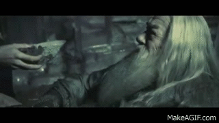

Okay. Let us be frank here. Despite how passionate we are about certain topics, earning a Ph.D. has more or less become mainstream today. Some of us do it because they don't get traditional jobs that would allow them to terminate the requirement to study forever, in turn extending it indefinitely (karma, basically). Some do it to get a continued experience of college/hostel life, some to travel abroad, and some just because 9 to 5 jobs are too mundane (this is me, although there are other top-secret reasons as well). Without bargaining which way is worse, people like us often end up underestimating the patience and grit required for completing a Ph.D. While there are a plethora of elements that make me excited for a Ph.D., as I prepare for my doctoral journey, I try to remind myself that it is certainly not a bed of roses.
Contrarily, there will be a handful of people who do not come into Ph.D. for any of the above-mentioned reasons but purely because they were simply made to shine in whatever they do. We shall refer to them as Einsteins. If you are one, you may find all this trivial and petty, so just move ahead with or without leaving some suggestions for us non-Einsteins. @non-Einsteins, you are at the right place. Below, I will list the description and the links for a few resources that may be useful for your journey too.
While a lot of what I share here will seem suitable for a student of Astrophysics and Astronomy, it will grossly be applicable to any field.
Resources
A comprehensive resource: Professor Chris Matzner's compilation is by far the best — an all-inclusive and exhaustive repository that covers all the nitty-gritty of research. Although a little old, it is in the form of a page with links and sub-links to several other documents. There is also a content list which makes for easy navigation.
Find it here: cita.utoronto.ca/~matzner/svc/resources.html
I wish I had known before: If Nature publishes it, it ought to be good, right? There are several articles talking about things which, known a priori, may lead to a smoother doctoral dissertation. This one was published in Nature Career Columns:
nature.com/articles/d41586-018-07332-x
Supervisor selection: Agreeing to get into a relationship is always hard and therefore, the expectations must be sorted out beforehand. Choosing a partner just because of one or two attributes you have fallen for would be stupidity. A much more comprehensive understanding is required before making a 5–6 year commitment. I find that the relationship with your supervisor is different from any other in two ways: even white lies are harmful, and you can talk to the exes to figure out compatibility. So, beware and use them to the fullest.
Here is a colour-coded checklist to use when searching for prospective supervisors: Get-Advisor.pdf (Columbia)
Big reads/books: As you'll spend a large part of your time reading, it'll only do you good to read any or all of the suggestions made by Dr. Sotayo in his blog post. This kind inclusion to the list was made by my dear old friend Shreya. But do remember what you are doing a Ph.D. on! XD
Link: drsotayo.com — 20 books for researchers
I am sure there are several other resources which could benefit people. Please feel free to update me on any.
In the end, you must always remember to not give up. And even if you do, remember to assign the role of Harry to some of your (mandatorily) non-PhD friends who are chilling their lives out in Goa or Hawaii so that they force you to go back to the office — or maybe take you on a leave with them!
